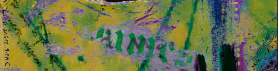
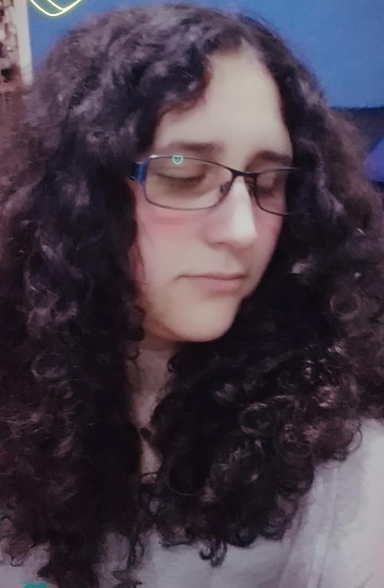
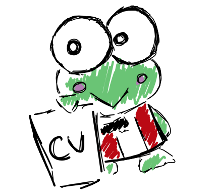

<!DOCTYPE html>
<html lang="es">

<head>
  <meta charset="UTF-8" />
  <meta name="viewport" content="width=device-width, initial-scale=1.0" />
  <title>Conte Guerra Claudia Belen</title>
  <link rel="stylesheet" href="estilo.css" />
</head>
</html>
<body>
  <header>
    <nav class="navbar">
      <a>Mi CV</a>
      <a href="contactos.html">Contacto</a>
      <a href="index2.html">Wiki</a>
      <a>Búsqueda</a>
    </nav>
    <div class="hero">
      <div class="titulo-banner">
        
        <h2 class="subtitulo">Lic. en Diseño y Comunicación Visual</h2>
        <h1>Belén Conte Guerra</h1></div>
    </div>
  </header>

  <main class="contenido-principal">
    <section class="bio">
      
      <p>
        ¡Hola! Soy estudiante de Diseño y Comunicación Visual en la Universidad de Lanús. Tengo 27 años y me considero alguien siempre dispuesta a trabajar.
        Me gusta la ilustración, el horror y el diseño caótico con toques de grunge.
      </p>
    </section>

    <section class="info">
      <div class="datos-personales">
        <h2>Datos personales</h2>
        <ul>
          <ul>
            <li><span class="etiqueta">Habilidades:</span> Ilustración, Diseño gráfico</li>
            <li><span class="etiqueta">Idiomas:</span> Español, Portugés básico</li>
            <li><span class="etiqueta">Intereses:</span> Peliculas, literatura, foto montaje</li>
            <li><span class="etiqueta">Disponibilidad:</span> Media jornada</li>
          </ul>

        </ul>
        
      </div>

      <div class="trabajos">
        <h2>Mis trabajos de la univesidad</h2>
        <div class="galeria">
          
          
          
          
          
          
          
          
        </div>
         <h2>Dibujos e ilustraciones</h2>
        <div class="galeria">
          
          
          
          
          
          
          
          
        </div>
      </div>
    </section>
  </main>

  <footer>
    Belén Conte Guerra | Universidad Nacional de Lanús | Computación 3
  </footer>
</body>

</html>